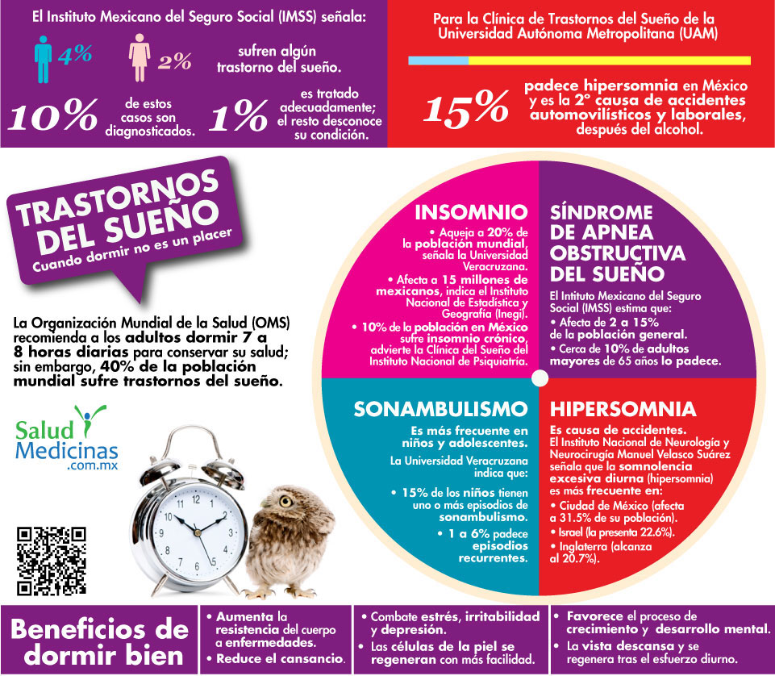

Objetivos impuestos por el grupo 2IV8

OBJETIVO GENERAL.
Dar a conocer la información acerca de los trastornos del sueño a través de una
investigación documental y encuestas relativas al tema.
Porque estos trastornos pueden incidir en el rendimiento académico para que
puedan ser detectados y atendidos.
OBJETIVO PARTICULARES.
Dar a conocer el concepto de los trastornos del sueño.
Reconocer los diversos tipos y principales trastornos del sueño.
Dar a conocer las causas y las consecuencias de los trastornos del sueño
a los estudiantes del CECyT No.15.
De qué tipo son los tratamientos.